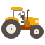

<!DOCTYPE html>
<html lang="en">
  <head>
    <meta charset="utf-8" />
    <meta name="viewport" content="width=device-width, initial-scale=1.0" />
    <link rel="stylesheet" href="https://www.w3schools.com/w3css/4/w3.css">
    <link rel='stylesheet' href='css/index.css'>

    <title>Tieme-Ndo</title>

    <link
      href="https://fonts.googleapis.com/css?family=Russo+One|Ubuntu"
      rel="stylesheet"
    />
    <link href="https://fonts.googleapis.com/css?family=Rye&display=swap" rel="stylesheet">
    <link href="css/index.css" rel="stylesheet" />
    <script src="js/myScript.js"></script>
    <script src="https://kit.fontawesome.com/202c6633ee.js" crossorigin="anonymous"></script>

    <!--[if lt IE 9]>
      <script src="https://cdnjs.cloudflare.com/ajax/libs/html5shiv/3.7.3/html5shiv.js"></script>
    <![endif]-->
  </head>
</html>
<body onload="startTime()">
  <header>
    <div class='logo'>
      
    </div>
    <nav >
      <a href="index.html">HOME</a>
      <a href="team.html">MY TEAM</a>
      <a href="contact.html">CONTACT</a>
      <a href="https://tieme-ndo-app.netlify.com/"><i class="fas fa-sign-in-alt"> Login</i></a>
    
    </nav>

    <div id="txt"></div>

    <div class='img-top'>

      

      
    </div>
  </header>
  
  <section class="top-header-section">
<div class="header-content">
  <h1>Tieme-Ndo</h1>
  <p>Tieme-Ndo is an application for rural farmers in Ghana aimed at helping improve access to new technologies and better track
    clients as well as their loan repayment rates. Tieme-Ndo is committed to bringing more access to the latest farming technologies
    to farmers in and around the Ghana region. We’re committed to using technology to help these farmers improve crop yields 
    without having to invest large amounts of additional capital into their farms. </p>
<hr></hr>
  </div>
<div class="feature-header">
  <h2>Features of Tieme-Ndo</h2>
  <!-- <hr></hr> -->
</div>
<!-- </section> -->
<!-- <section class="feature-master"> -->
<div class="feature-layout">
  <div class="feature-block">
    <h3>Weather Forecasts</h3>
    </img>
    <p>Get up to date weather forecasts</p>
  </div>
  <div class="feature-block">
    <h3>Growth Yields</h3>
    
    <p>Improve growth yields with technology</p>
  </div>
  <div class="feature-block">
    <h3>Water Usage</h3>
    
    <p>Track and conserve water usage</p>
  </div>
  <div class="feature-block">
    <h3>Equipment</h3>
    
    <p>Track sunlight on your farm</p>
  </div>
  <div class="feature-block">
    <h3>Track Sunlight</h3>
    
    <p>Track amount of sunlight</p>
  </div>
  <div class="feature-block">
    <h3>Soil Quality</h3>
    
    <p>Track and measure soil quality</p>
  </div>
</div>
<!-- </section> -->
<hr></hr>
<!-- <section class="testimonials-master"> -->
  <h2>Testimonials</h2>
  <hr></hr>
    <div class = "testimonials-block">

<blockquote>"I'm amazed at how much more efficient my farm is now thanks to Tieme-Ndo. My crop yields have increased significantly and the technology that I have at my fingertips is unbelievable. I wholeheartedly recommend Tieme-Ndo to any farmer in Ghana."</blockquote>
<blockquote>John Smith</blockquote>
</div>
</section>
</body>
<footer>
    <nav >
        <a href="index.html">HOME</a>
        <a href="team.html">MY TEAM</a>
        <a href="contact.html">CONTACT</a>
      </nav>
</footer>
</html>
